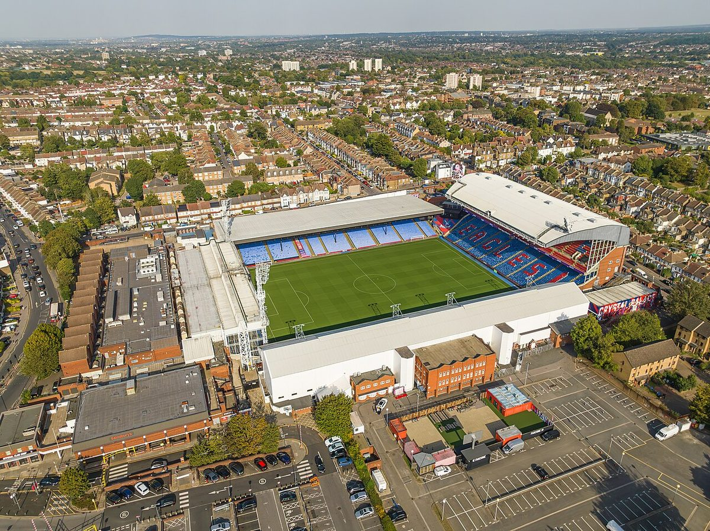

«Кристал Пэлас» уволил Пьера Сажа после 16 матчей
Команда замыкает турнирную таблицу АПЛ, а руководство клуба ведет переговоры с Томасом Франком.

Что произошло
В четверг, 12 ноября 2026 года, «Кристал Пэлас» объявил об увольнении главного тренера Пьера Сажа (Pierre Sage) спустя всего 16 матчей у руля команды. В официальном заявлении клуба, состоящем из 81 слова, подтверждается уход специалиста вместе с тремя членами его штаба: Джамалем Алиуи (Jamal Alioui), Дамьеном Делла Сантой (Damien Della Santa) и Сэнди Гишаром (Sandy Guichard). Отставка последовала за воскресным домашним поражением от «Ливерпуля» (1:3), после которого «орлы» опустились на самое дно турнирной таблицы Премьер-лиги. Официальное объявление задерживалось из-за переговоров о компенсации за досрочное расторжение трехлетнего контракта Сажа.
Почему это обсуждают

Столь стремительный уход стал болезненным поворотом для Сажа, который прошлым летом был признан лучшим тренером Франции после победы в Кубке страны и выхода в Лигу чемпионов с «Лансом». «Кристал Пэлас» уже ведет продвинутые переговоры с Томасом Франком (Thomas Frank), который может стать его преемником. Франк остается без работы с февраля 2026 года, когда его уволил «Тоттенхэм». Ситуация осложняется тем, что Саж стал главным кандидатом на возвращение в свой бывший клуб, «Ланс», который во вторник, 10 ноября 2026 года, расстался с Янником Каюзаком (Yannick Cahuzac). Это потенциально может помочь «Пэлас» компенсировать часть затрат: напомним, в июне лондонцы заплатили за переход Сажа более 4 млн фунтов.
Ключевые факты и цифры
Под руководством Сажа «Кристал Пэлас» набрал лишь семь очков в 10 стартовых турах АПЛ, одержав победы только над «Фулхэмом» и «Ноттингем Форест». У команды худшая оборона в лиге — 24 пропущенных мяча, а в таблице Лиги Европы, состоящей из 36 клубов, команда занимает 21-е место. На работу Сажа сильно повлияли кадровые потери: летом ушли Максанс Лакруа (Maxence Lacroix) и Даниэль Муньос (Daniel Munoz), а в январе Марк Гехи (Marc Guéhi) перебрался в «Манчестер Сити». Этим летом «Пэлас» потратил на трансферы меньше всех клубов АПЛ.
Что дальше
В клубе надеются назначить Томаса Франка до матча против «Ковентри», который состоится в субботу, 21 ноября 2026 года. Среди других кандидатов, которых рассматривало руководство, были Шон Дайч (Sean Dyche) и Витор Перейра (Vítor Pereira). В «Кристал Пэлас» пообещали предоставить обновленную информацию о назначении постоянного главного тренера в ближайшее время.